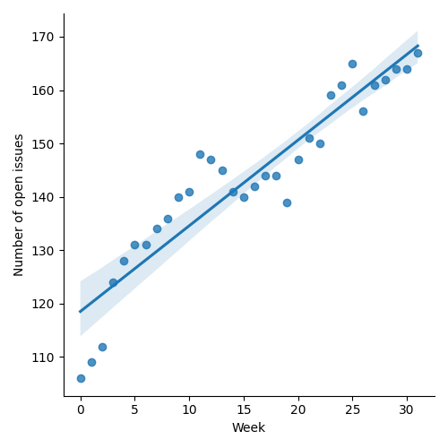
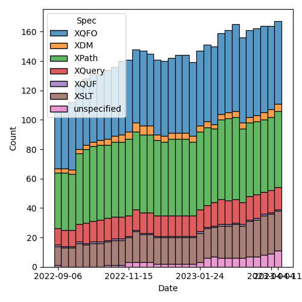
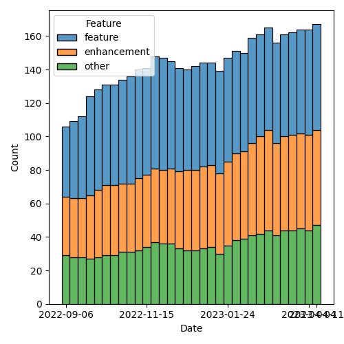

QT4 CG Meeting 031 Minutes 2023-04-18
Table of Contents
Minutes
Approved at meeting 032 on 18 April 2023.
Summary of new and continuing actions [0/14]
[ ]QT4CG-002-10: BTW to coordinate some ideas about improving diversity in the group[ ]QT4CG-016-08: RD to clarify how namespace comparisons are performed.[ ]QT4CG-026-01: MK to write a summary paper that outlines the decisions we need to make on “value sequences”- This is related to PR #368: Issue 129 - Context item generalized to context value and subsequent discussion.
[ ]QT4CG-029-01: RD+DN to draft spec prose for the “divide and conquer” approach outlined in issue #399[ ]QT4CG-029-07: NW to open the next discussion of #397 with a demo from DN[ ]QT4CG-031-01: MK to updatemap:ofto have more complete examples[ ]QT4CG-031-02: MK to make the map options into definitions.[ ]QT4CG-031-03: CG to draft a PR to address issue #410
1. Administrivia
1.1. Roll call [10/13]
[ ]Anthony (Tony) Bufort (AB)[X]Reece Dunn (RD)[X]Sasha Firsov (SF)[X]Christian Grün (CG)[X]Joel Kalvesmaki (JK) [0:6-][X]Michael Kay (MK)[X]John Lumley (JL)[X]Dimitre Novatchev (DN)[X]Ed Porter (EP)[X]C. M. Sperberg-McQueen (MSM)[ ]Bethan Tovey-Walsh (BTW)[X]Norm Tovey-Walsh (NW). Scribe. Chair.[ ]Mohamed Zergaoui
1.2. Accept the agenda
Proposal: Accept the agenda.
Accepted.
1.2.1. Status so far…

Figure 1: “Burn down” chart on open issues

Figure 2: Open issues by specification

Figure 3: “Burn down” chart on open issues
1.3. Approve minutes of the previous meeting
Proposal: Accept the minutes of the previous meeting.
Accepted.
1.4. Next meeting
The next meeting is scheduled for Tuesday, 25 April 2023.
No regrets heard.
1.5. Review of open action items [5/10]
[ ]QT4CG-002-10: BTW to coordinate some ideas about improving diversity in the group[ ]QT4CG-016-08: RD to clarify how namespace comparisons are performed.[X]QT4CG-023-01: NW to review the stylesheets for functions across XPath and XSLT- Stylesheets for formatting functions in F&O and XSLT are out-of-sync
- We’re not handling default values for parameters on the XSLT side
[X]QT4CG-025-03: MK to revise and expand technical detail in PR #375- See commit d8d0a77f
[ ]QT4CG-026-01: MK to write a summary paper that outlines the decisions we need to make on “value sequences”- This is related to PR #368: Issue 129 - Context item generalized to context value and subsequent discussion.
[X]QT4CG-027-01: MK to update the text for next-match wrt type() matching- See PR #412
[X]QT4CG-028-01: MK to summarize the options available wrt deep equal and errors- See six options proposed in https://github.com/qt4cg/qtspecs/pull/396
[ ]QT4CG-029-01: RD+DN to draft spec prose for the “divide and conquer” approach outlined in issue #399[ ]QT4CG-029-07: NW to open the next discussion of #397 with a demo from DN[X]QT4CG-030-01: RD to create issues that identify more clearly the various aspects of!,=>,->, and inline function definitions.
2. Technical Agenda
This week’s agenda mostly continues where we left off last week.
2.1. Issue #53: Allow function keyword inline functions without parameters
See Issue #53
- NW summarizes.
Some discussion of the flavors of lambda expressions in Java and C# with respect to expressions and statements.
- SF: My objection is that XPath is a niche language and it should support the primary features of this niche. Having things inline is part of XSLT expectations.
- MK: In the earlier versions of the language, we used custom syntax for higher order constructs: axis steps, the bang operator, etc. We’ve been moving towards using higher order functions and lambda expressions are the right way forward, and we have to make them as usable as possible.
- SF: But should it treat XSLT as the language for inline use?
- MK: I’m not sure what you mean by inline use.
- SF: For XSLT, conditions and selectors are inline.
- MK: It’s an embedded language. Yes, I think that’s the typical
scenario for XPath: within a host language such as XSLT, XSD, or…
XPath expressions are often short, but users can pack more into them.
- … The same applies to XQuery of course.
- Some discussion of whether or not the curly braces are dependent on the host language.
- RD: From a syntax point of view, we should be able to support both.
Either an
Expror anEnclosedExpron the right hand side. - CG: My personal impression is that it was a mistake not to enforce curly braces for more constructors. This came up in XQUery Update and in the if/then/else case. It may be harder in the future to add things to the language if we allow them to be omitted.
- MK: Yes, a little bit of redundancy can help.
- JL: I’m still slightly worried about the overloading of the
->operator. If we’re trying to get the chaining operations, you could end up with multiple->operators in the same chain and it could have completely different meanings at different points in the chain. - MK: Yes, I think if we use
->for lambda expressions, we need something else for chaining. - DN: I didn’t see the last few messages on the comment thread. If
we’re going to make a decision, we need to have all the information
at hand. I would like to summarize. Everything starts with mixing
too many things together, they’re good on their own, but mixed
together they make a different picture. First there’s the
->that almost duplicates!and why is this necessary. Then there’s function chaining. And then there’s the context value. And finally introducing lambda expressions. I want to express the opinion that this is analogous to high speed driving: it’s dangerous. There was evidence from experts on Python and C++ against the misuse of lambda expressions. The obvious problem of lambda expressions is that they interfere with readability, understandability, and maintainability. We’re spending a lot of time to support a certain writing style and not other features. Both Liam and I have written training courses and we don’t think these are easy to explain. I don’t think this is the best use of our resources in this group. We need to decide for ourselves and we should move on to more useful work. - RD: We’ve already got inline function expressions, so using higher order functions already provides lambda expressions. We’re just talking about making those things more concise and easy to use. We could also describe records and other features and packages and streaming are all things that you might describe as too confusing.
- DN: Do you think lambda expressions are already in the language in XPath 3.0?
- RD: Yes, the inline function expression. What we’re discussing in that thread is a more concise expression.
- DN: We don’t need this in the language, so we don’t have to do it.
Chair calls time on this conversation. Please move it back to the comment thread and email. I’ll put it back on the agenda when it seems like we might be closer to a resolution.
2.2. PR #420: Issue 357 Map composition and decomposition
See PR #420
MK walks us through the PR.
- MK: If we look at the map functions, section 18…
- … We start with some discussion of how maps can be decomposed and the fact that we have two different dcompositions.
- … Singleton maps are what you want for map merge and the other is key-value records.
- RD: Do we want to include an example?
- MK: Yes, that’s in the following table.
- … The new functions are
map:ofa set of key-value pairs andmap:key-value-pairsto do the decomposition. - … Could that function name be simplified to
map:key-pairs? Yes, probably.
- … The new functions are
- MK describes
map:of- … There should be more examples of the various options.
ACTION: QT4CG-031-01: MK to update map:of to have more complete examples
- DN: I don’t think there’s a formal definition of key-value pairs. And it isn’t clear what’s different between key-value pairs and map:entry.
- MK: No, there is a difference. You might sometimes prefer one over the other.
- DN: What is the difference?
- MK: There are two ways of decomposing a map: into a sequence of maps
each of which contains one pair, or you can decompose it into a set of maps where
the map always contains
keyandvalueentries.- … There’s nothing new here in terms of primitives.
- DN: This is confusing and the difference is so minor I can’t see it.
- MK: I’m just explaining that there are two different ways of doing things and they’re already supported by some functions.
- DN: Maybe it deserves a section explaining the difference.
Some discussion of how this could be more clearly explained. DN suggests that the section should precede the functions that use them.
- CG: I like the description and the table. And I think
map:pairswould be enough.- … I added a table in a comment on the issue and I added functions in issue #29. I could make a PR for that.
- MK: I can revise the proposal to add those.
- RD: Does it make sense where you’re describing what the different forms are if you make that a proper definition with the square bracket markup that is then a linkable reference.
ACTION: QT4CG-031-02: MK to make the map options into definitions.
- JK: I agree with DN that some definitions are needed. They’re
already in some of the function descriptions, they should be pulled
out. The use of
recordsuggests it’s something completely different, so maybe a different name that includes the word map would be better. - MK: I chose the term partly to match up with what we say about arrays, you get “value records” when decomposing an array.
- RD: Would it make sense to say something like the key-value pair map is a record test…and a record test links to a record test definition?
- DN: No, this is once again mixing too many things.
Some additional discussion of whether record was easier to
understand in previous conversations.
- MK: I’d like to look at the XSLT side as well.
- … The only impact is on examples and notes.
Proposal: accept the PR with action on MK to improve some things
Accepted.
2.3. Issue #410: Converting doubles to decimals, fractional digits
See Issue #410
- CG: The semantics of conversion have been changed and I think this
revision has caused some new issues. Now if you convert decimals,
you get a representation that differs from the string.
- … See examples.
- … I think the current revision makes it even more complicated.
- MK: What’s the difference between result 1 and result 2 in the table?
- CG: There are three results…there’s a scroll bar
- … See also this example.
- MK: I think there are two things here. One is a problem that exists
in XPath 3.1 in that the rules for double to string and double to
decimal are inconsistent. The second point is that the change we
made to equality matching will have adverse consequences for some
queries and stylesheets.
- … They’re related because I think the second shows that any change in this area is likely to have unexpected side effects.
- … I’m inclined to leave the double to string and double to decimal conversion alone: it’s just too hairy.
- … Maybe we can use a different equality operator here.
- CG: That sounds good to me.
- NW: I agree that we shouldn’t touch the conversions. I’m not sure about the operator.
- CG: It would be a minor change in distinct values.
- MK: How does the semantics of XQuery grouping work? Is that the same operator as distinct values?
- DN: It seems to me that this is the inevitable reality of floating point calculations. If we want such values to be equal, maybe we could introduce a new option to the comparison, perhaps ε. Or it could maybe be in the static context.
- RD: So are we talking about going back to the 3.1 spec and then fixing distinct values?
- MK: For distinct values and other places.
Revert to the 3.1 semantics and address comparison for distinct vlaues anod toer thing in a new way.
ACTION: QT4CG-031-03: CG to draft a PR to address issue #410
3. Adjourned
None heard.